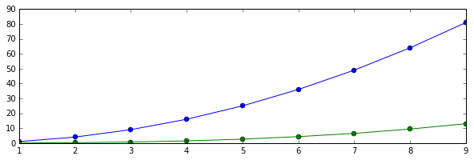
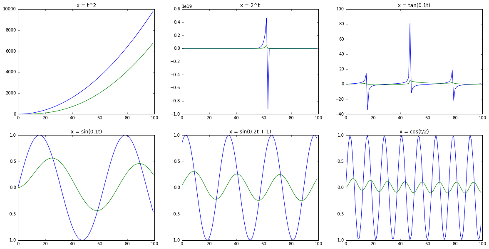

Filter playground
"You don't understand anything until you learn it more than one way." – Marvin Minsky
In my short Web Audio book, I covered the BiquadFilterNode, but didn't
have any sense for how it worked. As I sat down to read Human and Machine
Hearing, it became clear that I needed to catch up on some digital
filtering fundamentals.
What follows is an introduction to digital filters via explorable explanation I built to help myself better understand some DSP concepts. The approach I took was to try to present the concept as visually and aurally as possible, maximizing opportunities to build intuition. I learned a lot in the process. Read on for a introduction, jump ahead to the Filter Playground, or check out this video:
Cycles are everywhere
The world is full of examples of cyclical phenomena. Large cycles include planetary motion, seasons, tides, and ocean waves. Societies are governed by cycles: empires rise and fall, economies boom and bust, and fashion keeps repeating itself. On an individual scale, the human lifecycle, eating and sleeping, heartbeats and breathing, and locomotion are all periodic. And so are sound and light, the very nature of the world we percieve.
Wouldn't it be nice to understand and manipulate cyclical phenomena? A couple hundred years ago, Fourier showed that any repeating periodic signal, regardless of its complexity, can be represented as a sum of sine functions, paving the way for much deeper signal understanding. More recently, Shannon showed that you can take analog signals and represent them as numbers, which brings us to digital signal processing. For modifying digital signals, we need to look to digital filters.
The surprising link between periodic signals and difference equations
Bear with me on a brief mathematical tangent. Let's start with a simple difference equation that gives you an output sequence of numbers y[n] given an input sequence x[n]:
Given `x = [1, 2, 3], a = b = 0.5`, we can calculate y[n] with simple arithmetic, assuming that `y[-k] = 0`:
And so, given `x[n] = [1, 2, 3]` and the above difference equation, we get `y[n] = [0.5, 1.25, 2.125]`. Computers can do this sort of arithmetic really really quickly. But so what? And what does this have to do with our goal of manipulating periodic signals in general? Let's explore a bit more generally.
We can take any function x(t) and sample it numerically to get a sequence x[n]. For example, if we take `x(t) = t^2` and sample every integer from 1 to 10, we would get `x[n] = [x(1), x(2), ..., x(10)]`, in blue. Next, calculate y[n] and color it green:

Let's take several x(t), sample them into x[n], and see what the above difference equation gives us for y[n]. When we plot x[n] in blue and y[n] in green, we get the following graphs:

The first row shows the result of our difference equation on some mathematical functions: `t^2`, `2^t`, `tan(0.1 t)`, and very little relationship between x and y. The second row shows some sinusoidal functions with varying period and phase in blue, sampled and run through the same difference equation and shown in green. The pattern starts to become pretty clear: sine functions are special in the same way. The generalized result is surprising and awesome: if you take any sine function, and feed it into any difference equation, you end up with another sine function with the same frequency, but a different amplitude (gory details here).
We've looked at just one specific difference equation: `y[n] = 0.5 x[n] + 0.5 y[n-1]`. Let's look at difference equations in general, and see how they affect the relationship between x[n] and y[n].
Transfer functions describe the behavior of filters
We just saw that for an input sine function with a frequency and amplitude, a difference equation will produce an output sine function with another amplitude. In the `sin(0.1 t)` graph above, we can see that the amplitude of the green graph is 0.5. If we look across all frequencies `x(t) = sin(omega t)` and see how difference equations change the amplitude for all `omega`. This will give us the frequency response for this specific difference equation. But what happens in general?
If we bring our difference equation into a canonical form, we can apply the Z-transform and get a corresponding transfer function. The math to derive this is complicated, but the bottom line is that for any difference equation in the general form:
The corresponding transfer function is of this form:
Let's go back to our example, `y[n] = ax[n] + by[n − 1]`. We can see that this fits the general form, with `a_0 = 1`, `b_0 = b`, `a_1 = a`, with all of the other `a_i = b_i = 0`. Plugging in these values, the transfer function for this example is:
This transfer function can tell us a lot about the behavior of the difference equation, and ultimately its frequency response.
Visual intuition around transfer functions
But what the heck does this transfer function tell us?! Let's try to build some visual intuition. Firstly you see that our H(z) is a rational polynomial. This means the numerator and denominator both have roots. Numerator roots are called zeros and denominator zeros are called poles. From high school math, recall that we can plot roots on a number line. Except in this case, we're also interested in imaginary roots, and we can plot them on the complex plane. O's represent zeros, X's represent poles. For our H(z), the numerator is `0.5 z`, which has a root (zero) at zero, and the denominator is `z - 0.5` with a root (pole) at 0.5, and so plotting poles and zeros, we get:
Here's how you can think about zeros and poles: if z is really close to a zero, |H(z)| will be close to zero. If it's really close to a pole, |H(z)| will blow up, approaching infinity. Now, imagine you took a rubber sheet and draped it over the complex plane. Now put stones where the O's are, and telescoping tent poles where the X's are, and then extended the tent poles to be really tall. You would end up with a circus tent. This is the surface that we get by plotting complex values of z (along the x-y plane) and using |H(z)| as the height corresponding to each z.
We can recover the pole-zero diagram by taking a birds-eye view at the same circus tent, and plotting the poles and zeros on the xy-plane:
The neat thing about this circus tent is that it tells you the frequency response of the filter. To do that, we look at the unit circle as it sits on top of the circus tent diagram:
Which we can unwrap into a frequency response plot by looking at `|H(e^(i omega))|` with `omega in [0, pi]`:
Now let's see to what our example filter does to a white noise sample. Here is
the frequency response of the sample played through our filter according to a
Web Audio AnalyserNode (you can also hear the filter in the Filter
Playground):
Since noise has equal power across the frequency range, it is a good end-to-end
test. We expect the AnalyserNode's frequency response to line up closely with
the bode plot in the previous figure, and they do.
The filter we created above is a low pass filter, meaning that it allows low frequencies to pass, but attenuates high frequencies. Let's look at other kinds of filters.
More complex filters
Our first filter had one pole and one zero. What happens if we make a filter with two poles and two zeros? Here's an example:
`H(z) = (z^2-1)/(z^2-1.975z+0.99) `
This example has two poles and two zeros, which is also called a Biquad filter.
The Web Audio BiquadFilterNode has 8 different filter types, all
of which are implemented with two poles and two zeros.
The filter in question is called bandpass filter, because it allows a band of frequencies through, and attenuates the rest. Go ahead and open this in the filter playground, and you'll see a variety of views of this bandpass filter.
The point of a playground isn't just to look at other people playing, it's to play with them! So I invite you to try it out. You can generate a biquad filter by selecting parameters with the filter wizard, or input any H(z) manually, or move around poles and zeros visually. Using the pole-zero view, you can add poles and zeros with buttons, or remove them by dragging them far enough out of the unit circle. Check out my YouTube video for more examples of playing around on the playground.
Implementation notes and thanks
I'd like to thank a handful of people for their help on this side project.
Firstly, to Raymond Toy for continuing to update the Web Audio API spec with
useful goodies. This side project wouldn't be possible without the recently
added IIRFilterNode. Raymond has a few filter-related projects on the web,
including Digital Filter Design, which lets you create more complex
digital filters using a cascade of second order filters.
I built the 3D complex function plots with Mathbox, a very powerful WebGL based visualization toolbox. If you haven't seen it yet, check out How to Fold a Julia Fractal, which is awesome in its own right, but also illustrates the power of mathbox. It's also a great introduction to complex numbers, which I glossed over in this here post. Huge credit to Steven Wittens for both mathbox and the inspiring blog post.
Finally, my thanks to Dick Lyon for writing an interesting and challenging book and responding to my email (squee!), which ultimately inspired this project.
A mathematical appendage
I tried to make the post understandable as possible by reducing analytical math and leaning heavily on interactive illustrations. Inevitably I have waved my hands and collected massive mathematical debt along the way, most notably everything to do with deeply understanding the Z-transform, but also:
- The filter playground requires poles to be inside the unit circle. If a pole is outside of the unit circle, the filter will become unstable, meaning that it will tend to blow up a signal that is fed into it.
- High order IIR filters tend to become numerically unstable. The solution is to break up high order rational functions into products of lower order rational functions, but the filter playground doesn't currently do this.
- In most real life applications, complex filters are implemented as a cascade of first or second order filters chained together. This Digital Filter Design example illustrates it well.
- You might have noticed that points on the pole zero plot of the filter playground are never found floating alone on the complex plane. All of the coefficients of the numerator and denominator polynomials are real since they were taken from the original difference equation y[n], so by the complex conjugate root theorem, their roots (poles and zeros) must be either purely real, or appear in complex conjugate pairs.
Over and out
Thank you for getting this far, especially because I suspect this post may fall into a sort of uncanny valley: too technical for a casual reader, and too trivial for a DSP expert. At the very least, building the filter playground helped me wrap my head around digital filters. Ultimately I hope the filter playground can serve as a useful teaching tool for DSP novices.
I'd love to hear whether reading the post, watching the video and playing with the filter playground helped you better understand digital filters. Please let me know via twitter or by email.